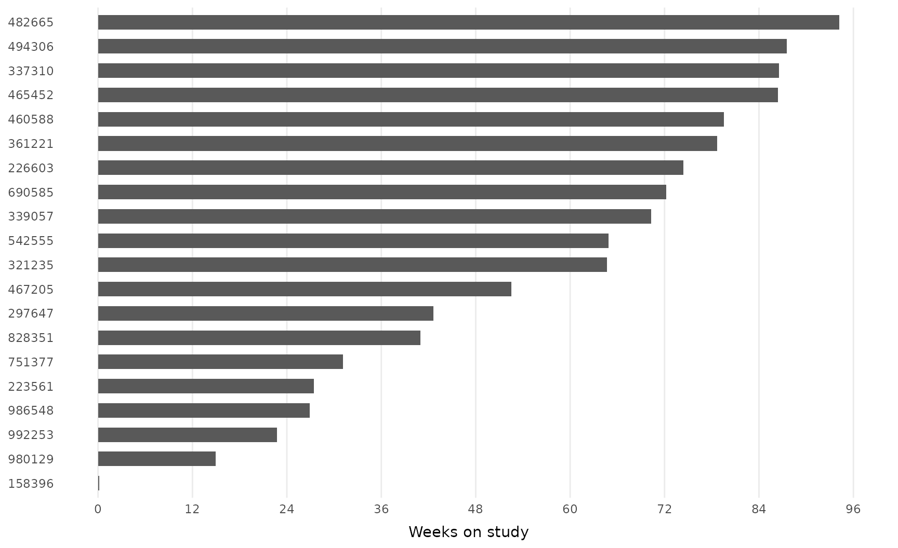
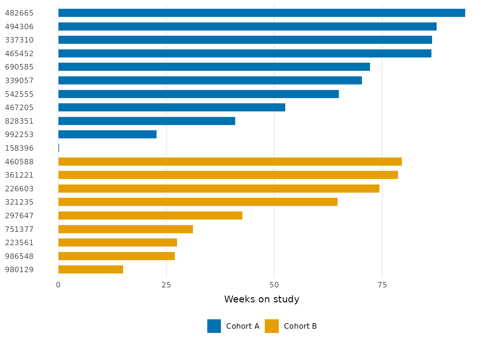
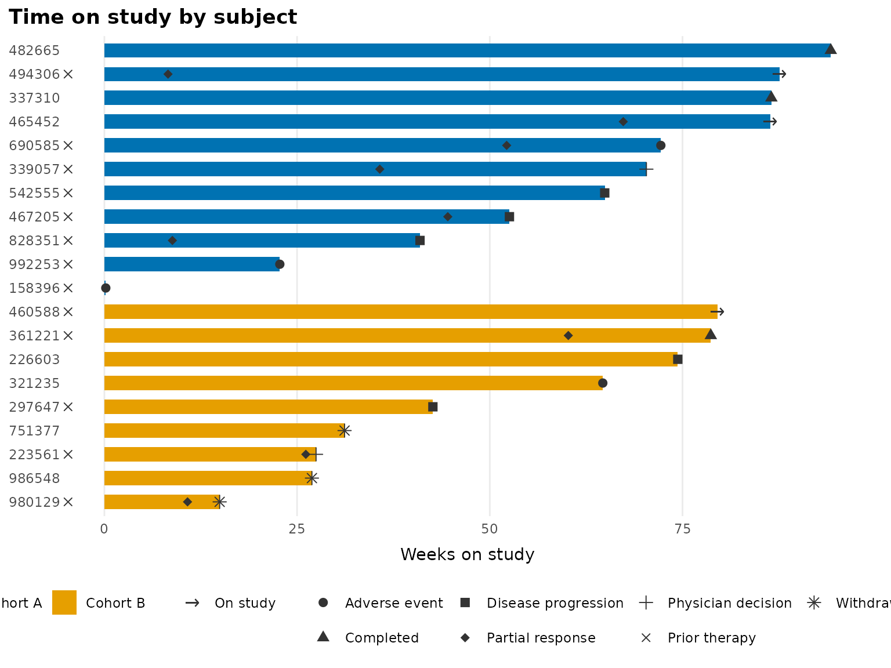
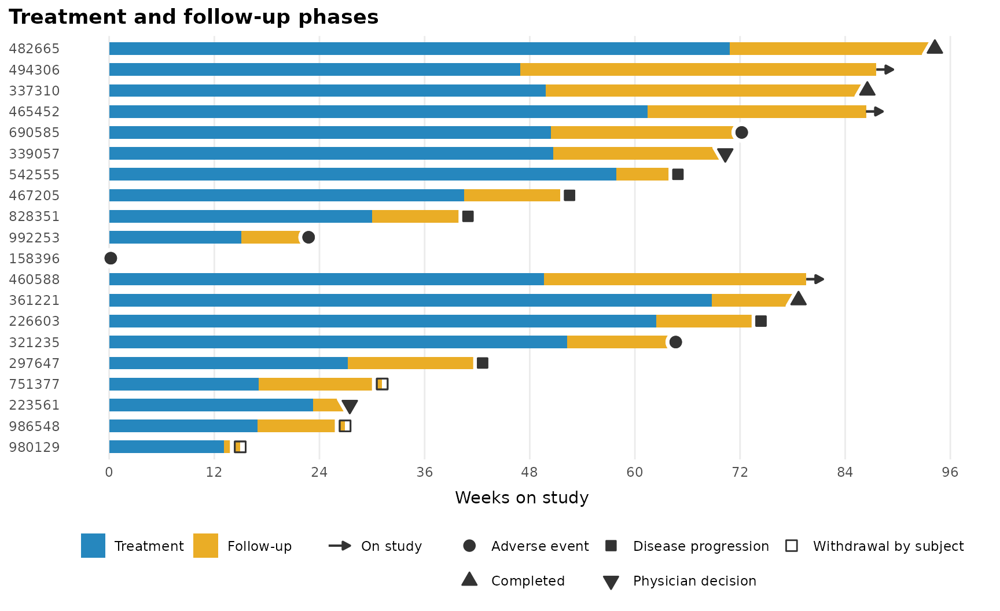
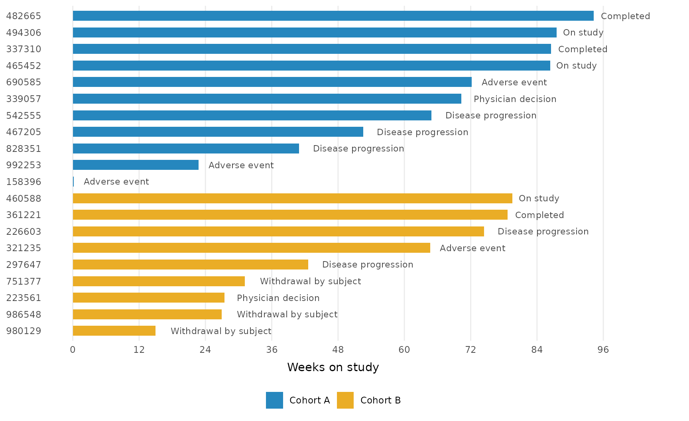
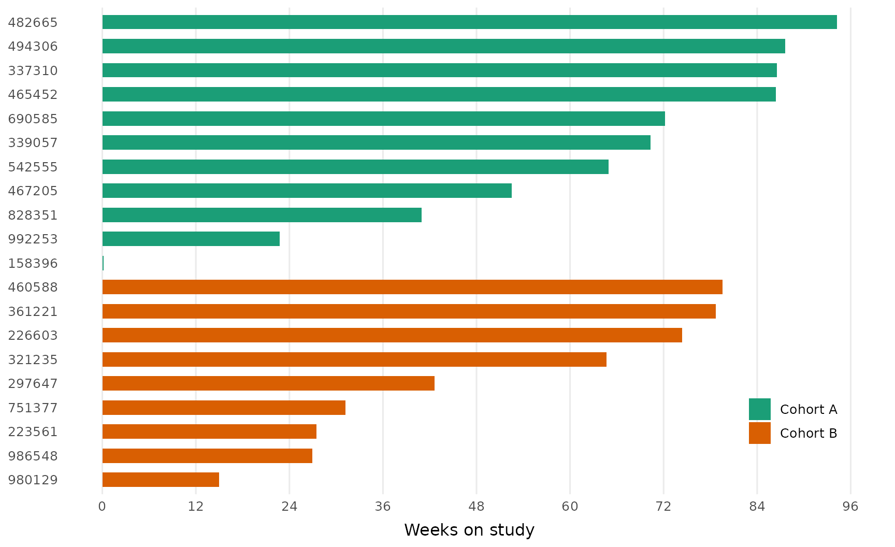

All examples use the bundled patient_disposition data, a
simulated disposition table for 20 trial participants.
patient_disposition
#> # A tibble: 20 × 7
#> subject weeks_on_study cohort reason_off_study prior_drug partial_response
#> <chr> <dbl> <chr> <chr> <chr> <dbl>
#> 1 339057 70.3 Cohort A Physician decisi… Yes 35.7
#> 2 751377 31.2 Cohort B Withdrawal by su… No NA
#> 3 297647 42.6 Cohort B Disease progress… Yes NA
#> 4 992253 22.8 Cohort A Adverse event Yes NA
#> 5 542555 64.9 Cohort A Disease progress… Yes NA
#> 6 980129 15.0 Cohort B Withdrawal by su… Yes 10.8
#> 7 321235 64.7 Cohort B Adverse event No NA
#> 8 223561 27.5 Cohort B Physician decisi… Yes 26.1
#> 9 494306 87.6 Cohort A NA Yes 8.26
#> 10 460588 79.6 Cohort B NA Yes NA
#> 11 482665 94.2 Cohort A Completed No NA
#> 12 361221 78.7 Cohort B Completed Yes 60.2
#> 13 690585 72.2 Cohort A Adverse event Yes 52.2
#> 14 337310 86.5 Cohort A Completed No NA
#> 15 986548 26.9 Cohort B Withdrawal by su… No NA
#> 16 158396 0.186 Cohort A Adverse event Yes NA
#> 17 828351 40.9 Cohort A Disease progress… Yes 8.82
#> 18 226603 74.4 Cohort B Disease progress… No NA
#> 19 467205 52.5 Cohort A Disease progress… Yes 44.6
#> 20 465452 86.4 Cohort A NA No 67.3
#> # ℹ 1 more variable: weeks_on_treatment <dbl>A basic swimlane
geom_swimlane() draws one bar per subject.
order_swimlane() relevels the subject column first so lanes
run shortest to longest, and theme_swimlane() supplies the
finished look. Time axes read best with breaks at protocol-meaningful
intervals, so every example here sets 12-week breaks rather than
accepting the ggplot2 defaults:
patient_disposition |>
order_swimlane(subject, weeks_on_study) |>
ggplot() +
geom_swimlane(subject, weeks_on_study) +
scale_x_continuous(breaks = scales::breaks_width(12)) +
labs(x = "Weeks on study") +
theme_swimlane()
Add a fill variable to color lanes by cohort; pass the same variable
to order_swimlane() to group the lanes:
patient_disposition |>
order_swimlane(subject, weeks_on_study, cohort) |>
ggplot() +
geom_swimlane(subject, weeks_on_study, cohort) +
scale_x_continuous(breaks = scales::breaks_width(12)) +
labs(x = "Weeks on study") +
theme_swimlane()
Annotating lanes
Three layers mark events along each lane, and each generates its legend entry automatically:
-
geom_swimlane_status()marks the end of each lane with the subject’s status; subjects still on study (NAstatus) get a rightward arrow. -
geom_swimlane_marker()marks on-lane events such as responses. -
geom_swimlane_rug()flags baseline characteristics in the left margin.
patient_disposition |>
mutate(
prior_drug = if_else(prior_drug == "Yes", "Prior therapy", NA)
) |>
order_swimlane(subject, weeks_on_study, cohort) |>
ggplot() +
geom_swimlane(subject, weeks_on_study, cohort) +
geom_swimlane_status(subject, weeks_on_study, reason_off_study) +
geom_swimlane_marker(
subject, partial_response,
marker_label = "Partial response"
) +
geom_swimlane_rug(subject, prior_drug) +
scale_x_continuous(breaks = scales::breaks_width(12)) +
labs(title = "Time on study by subject", x = "Weeks on study") +
theme_swimlane()
Two-color bars: stacked segments
With one row per subject and phase, bar segments stack in
factor-level order. Here each lane splits into treatment and follow-up
phases; note that order_swimlane() runs before pivoting so
lanes stay ordered by total duration.
Shapes assign in factor-level order, so a plot with different status
levels would reshuffle them: this plot has no partial responses, and
“Physician decision” would silently inherit the diamond that meant
“Partial response” above. When a document has several swimlanes, pin
each status to its shape with a named values vector:
status_shapes <- c(
"Adverse event" = 21,
"Completed" = 24,
"Disease progression" = 22,
"Partial response" = 23,
"Physician decision" = 25,
"Prior therapy" = 1,
"Withdrawal by subject" = 0
)
patient_disposition |>
order_swimlane(subject, weeks_on_study, cohort) |>
mutate(
Treatment = weeks_on_treatment,
`Follow-up` = weeks_on_study - weeks_on_treatment
) |>
tidyr::pivot_longer(
c(Treatment, `Follow-up`),
names_to = "phase", values_to = "weeks"
) |>
mutate(phase = factor(phase, levels = c("Treatment", "Follow-up"))) |>
ggplot() +
geom_swimlane(subject, weeks, phase) +
geom_swimlane_status(subject, weeks_on_study, reason_off_study) +
scale_shape_swimlane(
values = status_shapes,
guide = guide_legend(order = 3, nrow = 2)
) +
scale_x_continuous(breaks = scales::breaks_width(12)) +
labs(title = "Treatment and follow-up phases", x = "Weeks on study") +
theme_swimlane()
Text annotations
Prefer text over symbols? geom_swimlane_label() writes
each status past the end of its bar. Subjects with NA are
skipped, which would leave ongoing subjects indistinguishable from
missing data, so recode them to a label first. Widen the right margin to
make room:
patient_disposition |>
mutate(reason_off_study = coalesce(reason_off_study, "On study")) |>
order_swimlane(subject, weeks_on_study, cohort) |>
ggplot() +
geom_swimlane(subject, weeks_on_study, cohort) +
geom_swimlane_label(subject, weeks_on_study, reason_off_study) +
scale_x_continuous(breaks = scales::breaks_width(12)) +
labs(x = "Weeks on study") +
theme_swimlane(extra_margin_r = 60)
Customization
The built-in scales step aside for any discrete scale you add
(ggplot2 prints a message when a scale is replaced). Theme settings pass
through theme_swimlane(), including an inside legend:
patient_disposition |>
order_swimlane(subject, weeks_on_study, cohort) |>
ggplot() +
geom_swimlane(subject, weeks_on_study, cohort) +
scale_fill_brewer(palette = "Dark2") +
scale_x_continuous(breaks = scales::breaks_width(12)) +
labs(x = "Weeks on study") +
theme_swimlane(
base_size = 12,
legend.position = "inside",
legend.position.inside = c(0.9, 0.15)
)
Fonts
theme_swimlane() deliberately sets no font family, so
plots use your graphics device’s default and render the same everywhere.
To use a house font, pass any installed font’s name as
base_family:
patient_disposition |>
order_swimlane(subject, weeks_on_study, cohort) |>
ggplot() +
geom_swimlane(subject, weeks_on_study, cohort) +
scale_x_continuous(breaks = scales::breaks_width(12)) +
labs(x = "Weeks on study") +
theme_swimlane(base_family = "Atkinson Hyperlegible")Font lookup depends on the graphics device. The ragg devices resolve any font
installed on your system by name; in R Markdown or Quarto, set the chunk
option dev = "ragg_png". The base pdf() device
only knows a handful of built-in typefaces, so for PDF output use
dev = "cairo_pdf" instead.